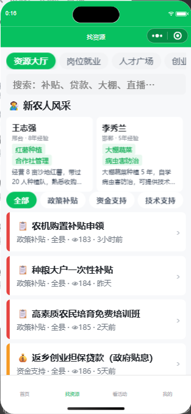
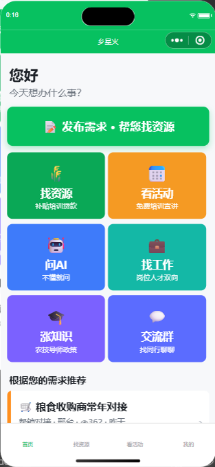
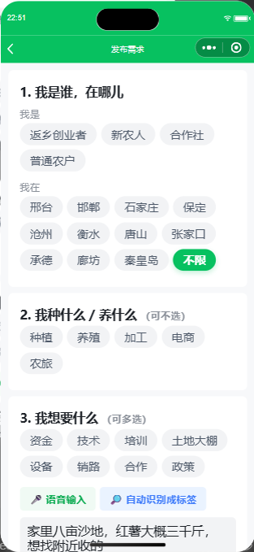
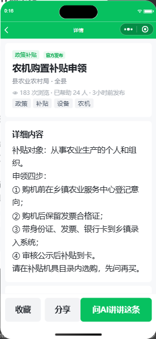

岗位就业
汇聚县域农企与合作社岗位，破解"回乡没活干"。投递后站内留痕，消息中心提醒进展。
2027 年挑战杯 · 科技发明制作 B 类
一个平台、四重赋能：让返乡青年找得到岗位、对得上资源、问得清政策。
微信小程序「乡星火」，三步之内找到能用的资源。


01 / 问题
我们在县域实地走访，回收 400 份《大学生返乡就业意愿调查》问卷。 数据显示：有意向返乡的只有 37.5%，但真正卡住他们的不是意愿，而是四件事。
乡村产业链条短、岗位层次低，青年难以获得与城市对等的成长通道。
收入预期与城市差距明显，创业初期缺乏稳定现金流。
社保、医疗、子女教育等配套不足，"后顾之忧"没有系统解决。
政策、资金、技术、市场分散在不同部门，"找得到政策、对不上资源"。
02 / 产品
四个模块覆盖"找活干、被看见、学得会、问得清"。
汇聚县域农企与合作社岗位，破解"回乡没活干"。投递后站内留痕，消息中心提醒进展。
青年上传技能履历，企业主动寻才，实现"双向撮合"——人找岗，岗找人。
看活动 + 推荐流：线下实训报名、供需即时沟通，首页智能推荐闲置土地与补贴。
问 AI + 资源：AI 秒解惠农政策，配套导师、课程与资源对接。
微信小程序 · 乡星火 v0.6.0
双 UI 模式：简洁大板（中老年）/ 精美标准版（日常浏览），切换即记忆。


村级入口扫码即入，服务下沉到村，村级活跃度可统计。
说一句话自动生成品类/诉求/地区/规模标签，本地引擎离线可用。
农户与企业互相找到对方，匹配理由可解释：品类·地区·时间。
每条信息标注来源，官方/企业分级提示，办理不收费。
简洁大板与精美版一键切换，55 岁以上完成率由 75% 提升至 100%。
政策与农技问答，回答带办理路径与电话，可接大模型。
03 / 调研
2026-11 问卷星线上调研，共回收 400 份（2025 级 85%、男性 95%）。
04 / 验证
05 / 商业
公益为主，企业入驻为模拟演示，不含真实交易。
资源提供与付费方
农资企业、合作社、深加工企业：精准新农人客群与农资集采渠道；社区团购、电商平台、供应链：可溯源货源；农商行与担保机构：基于画像推荐优质信贷客户。
被赋能者
返乡大学生、退役军人、返乡农民工及本土青年：缺技能、缺资金、缺销路，是平台的基础流量与核心服务对象。
生态共建与购买方
地方政府与涉农部门：提供可量化、可评估的乡村人才振兴数字化方案，承接政府购买服务项目。
06 / 团队